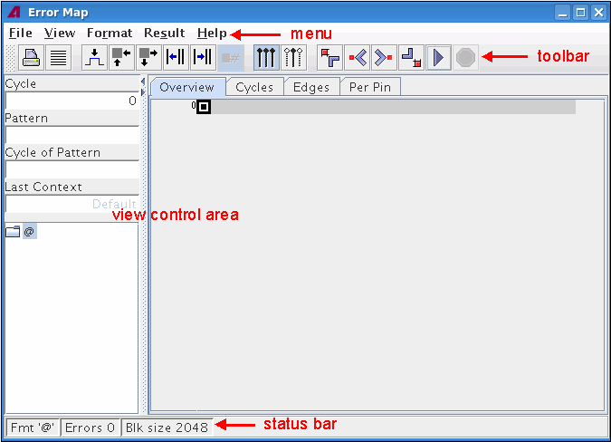

Elements of the Error Map ToolSubtopicsMenu and icon toolbarView control areaStatus Bar  Functional changesIntroduced before SmarTest 6.3.2SmarTest 7.1.1: Displaying the current pattern and its cycle number